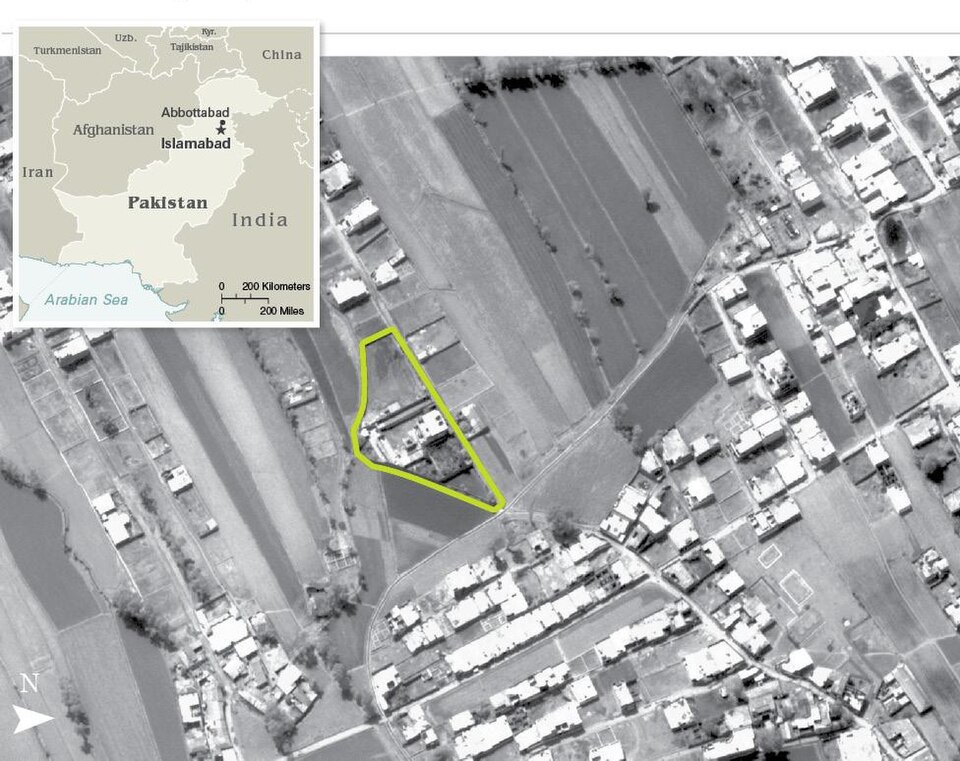

Estados Unidos mató a Osama bin Laden, el hombre del 11 de septiembre
Un comando de fuerzas especiales asaltó de madrugada la casa fortificada donde el jefe de Al Qaeda se escondía, a metros de una academia militar paquistaní. El presidente Obama lo anunció a medianoche; frente a la Casa Blanca y en la Zona Cero, multitudes cantaron hasta el amanecer.

«Puedo informar al pueblo americano y al mundo que los Estados Unidos han conducido una operación que mató a Osama bin Laden, el líder de Al Qaeda». Con esa frase, pronunciada a las once y media de una noche de domingo, el presidente Obama cerró la cacería humana más larga y costosa de la era moderna. Casi diez años después de que las torres cayeran en Manhattan, el hombre que las derribó murió de un disparo en una casa amurallada de Abbottabad, una tranquila ciudad de guarnición a dos horas de Islamabad, donde vivía escondido no en una cueva de la montaña, como quería la leyenda, sino a ochocientos metros de la academia militar de Pakistán.
La operación duró cuarenta minutos y parece escrita para el cine, aunque costó años de paciencia de archivo: un par de helicópteros furtivos, un comando de los SEAL, un correo de confianza rastreado durante media década hasta esa casa sin teléfono ni internet que quemaba su propia basura. Los americanos se llevaron el cuerpo, lo identificaron y lo sepultaron en el mar antes del amanecer, para que no hubiera tumba que adorar. Pakistán, que jura no haber sabido nada —ni del huésped ni del asalto—, tendrá que explicar cuál de las dos ignorancias es peor.
La pista fue un apodo y una paciencia: en los interrogatorios de la década pasada apareció el alias de un correo de confianza del prófugo, y la inteligencia americana tardó años en ponerle cara, teléfono y, finalmente, una camioneta a la que seguir sin ser vista hasta Abbottabad. La casa hizo el resto de la denuncia: muros de hasta cinco metros y medio coronados de alambre, ni teléfono ni internet en un barrio acomodado, la basura quemada en el patio en lugar de sacarse a la calle. La certeza nunca fue plena —los analistas hablaban de poco más de un cincuenta por ciento—, y el presidente eligió la opción más arriesgada: hombres en vez de bombas, para poder saber, y probar, quién dormía en el piso de arriba.
La noche tuvo su falla y su testigo involuntario. Uno de los helicópteros perdió sustentación sobre el patio y hubo que dinamitarlo antes de irse, de modo que la operación secretísima terminó con una explosión iluminando el barrio; los comandos igual cumplieron el guion: cuarenta minutos y afuera. A esa misma hora, un vecino desvelado se quejaba en internet, sin saberlo, del «helicóptero que ronda Abbottabad a la una de la madrugada»: la primicia mundial la dio un hombre molesto por el ruido. En Washington, la fotografía que ya recorre el mundo muestra al presidente y a su gabinete apretados en una salita, mirando el asalto en directo con la cara de quien no respira; la secretaria Clinton, con la mano en la boca, dirá después que era la alergia. Nadie le cree, y no importa.
Frente a la Casa Blanca y en la Zona Cero de Nueva York, miles de personas, muchas de ellas criadas a la sombra de aquel martes de 2001, cantaron el himno y treparon a los faroles. Es difícil reprochárselo y es necesario anotarlo: lo que se celebra no es una victoria sino un punto final, y ni siquiera eso. Las guerras que aquel hombre desató siguen abiertas en Afganistán y en tantas partes, y su organización le sobrevive. La justicia, esta vez, llegó en helicóptero y de noche; la paz, que es otra cosa, sigue sin fecha de arribo.